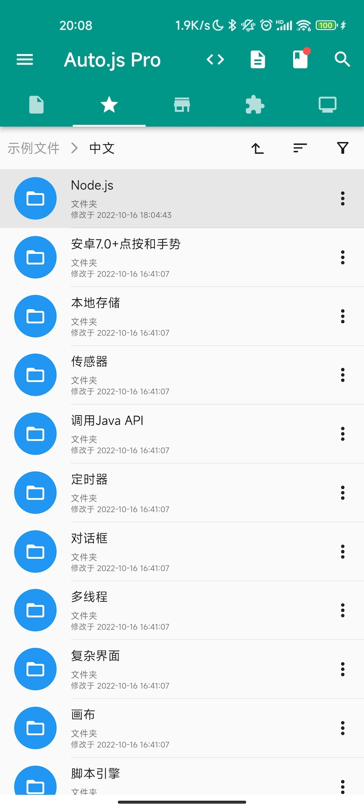

简介
简介
Auto.js Pro是Android上基于JavaScript的面向小应用开发、编程学习的代码开发平台。
Auto.js Pro可以做什么
使用JavaScript和Node.js实现一个小应用。
开发小应用
Auto.js Pro本身具有开发完整应用的功能，可由JavaScript项目生成独立分发的apk包。你既可以沿用Web知识开发界面，也可以使用Auto.js提供的控件开发简单的界面，甚至可以使用原生控件开发优美界面。
Auto.js Pro可安装npm包、加载dex、jar、动态库等，连接Android/Node.js的生态，更让Auto.js不仅局限于小应用，使用Auto.js开发坦克大战游戏、愤怒的小鸟游戏、http服务器等的例子也不少见。
学习JavaScript与验证想法
Auto.js Pro本身带有多Tab编辑器、调试器等专业开发工具，也允许你使用VSCode来编写和运行代码。对于有兴趣学习编程的学生来说是一个不错的编程学习工具，代码不再仅局限于理论；对于想从事编程行业的人也是不错的低门槛入门工具，你可以从Auto.js走向Node.js全栈开发和Android开发；对于成熟的开发人员来说也是随手验证想法，摸鱼偷懒时的有趣玩具，也是辅助平时开发的好工具。
Auto.js Pro对比其他版本有什么优势
- Node.js引擎
Pro 9新增Node.js 16.x引擎，性能是原引擎的100倍以上，支持ES2021
- 插件商店与免安装
插件打包时可被合并到apk，无需再单独安装；插件商店上线，多个插件任你选择
- 加密增强
Node.js引擎加密目前未被还原代码，即将推出在线优化进一步增强加密
- 完美VSCode调试体验
远程单步调试、自动补全，9.3版本更全面优化了文件同步效率、管理手机文件等功能
- Npm生态支持
可安装和使用npm包，包括ws、express、koa等200万个npm包
- 代码商店
近千个免费在线代码与项目随意下载，也可与其他用户分享你
- 打包自定义
打包时可自定义签名、CPU架构、启动图、权限，优化应用大小，混淆组件等
- React/Vue/Web
官方支持使用web编写界面，甚至可以使用React/Vue等框架，并提供了web交互API
- 多Tab编辑器工作区
多Tab文件编辑、树状文件管理，编辑器基于LSP智能补全、语法错误提示等
- UI可视化设计
由浩然实现的可视化UI设计，为小白设计UI提供了更方便简单的设计界面
- API增强
新增WebSocket、数据库、原生界面、任务、设置等多个模块
- Bug修复与优化
3年200个版本，近500个Bug修复，近200个优化，200多个新功能。
- 更多新特性
参见更新日志，更多功能持续更新中
Auto.js Pro学习路线综述
Auto.js Pro使用JavaScript作为脚本语言。目前使用两个JavaScript引擎：
- Rhino 1.7.14，支持ES5与部分ES6特性。免费版和旧版Pro使用的引擎，对新的JS标准的支持不太完善。基于此引擎的API称为第一代API或Rhino API（API v1）。
- Chrome V8。在9.0版本，Auto.js Pro新增了基于V8引擎的Node.js 16.x引擎。Node.js是一个成熟、流行的JavaScript运行时。它在Web前后端开发，Electron跨平台应用开发中都有很多的应用。使用Node.js可以让获得更高的性能、更好的代码保护。基于Node.js引擎的API称为第二代API或Node.js API。
因此，在学习Auto.js Pro之前的，需要先学习JavaScript基础知识。
另外，Auto.js Pro内置的示例非常重要，建议在初读文档时，可以结合具体模块运行每个功能的示例，对于理解Auto.js Pro的功能（以及部分暂时还没有文档的功能）非常关键。

Auto.js Pro不能做什么
虽然Auto.js Pro无所不能，但不能用于游戏外挂、读写内存、黑灰产等违法违规行为。
- Auto.js Pro官方永久不会提供读写其他程序内存的功能。
- Auto.js Pro官方永久不会提供抓取和修改其他应用网络数据的功能。
- Auto.js Pro不能用于根据有关法律法规、有关部门条例文书、有关法院判决判例等相关规定不能使用的其他情形。
另外，Auto.js Pro移除了无障碍等自动化模块，如果你需要实现的是效率、自动化、工作流工具，则不适合Auto.js Pro。
如何获得Auto.js Pro
什么？读到这里你居然还没下载Auto.js Pro！点击软件下载立即下载Android App吧。
接下来就可以开始编写第一行代码了。